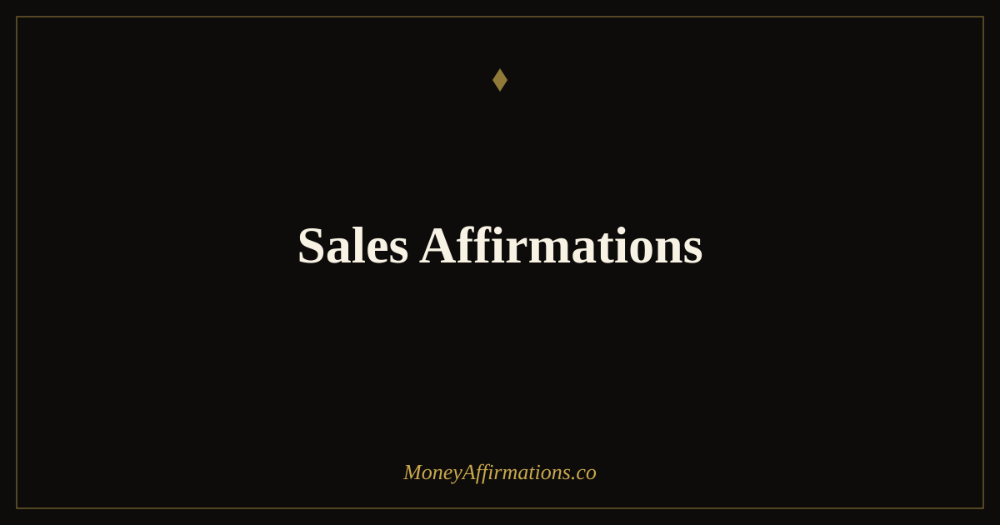

Sales Affirmations: 30 Statements to Close More and Earn More

Sales performance research has consistently identified mindset as a primary differentiator between average earners and top performers. Skill matters, training matters, product quality matters — but the belief system a salesperson carries into every conversation, every close attempt, and every rejection determines the ceiling on all of those other factors. These 30 sales affirmations are specifically built for the closing and earning dimension of sales identity: the unshakeable belief that your pipeline is full, that each conversation is an opportunity to deliver genuine value, that a "no" is a statistical step rather than a personal verdict, and that your income grows in direct proportion to the consistent, disciplined effort you bring to your craft each day.
What are sales affirmations?
Sales affirmations are first-person, present-tense statements that target the beliefs and identities that directly influence sales performance. They address the closing mindset — the inner posture that makes a salesperson comfortable asking for commitment, comfortable with rejection, and consistent enough in their activity to produce reliable results over time. Unlike general confidence affirmations, sales affirmations are specifically oriented toward income generation, pipeline discipline, top-performer identity, and the resilient daily hustle that separates high earners from those who plateau.
For a broader financial mindset foundation that supports the income your sales performance generates, explore the money affirmations collection.
30 sales affirmations
- I close deals consistently because I believe in the value I offer and I communicate it with clarity.
- I am a top performer, and I earn at the level that top performance commands.
- Every "no" I receive moves me statistically closer to my next "yes," and I embrace that reality.
- I maintain a full pipeline because I take daily, consistent action regardless of how I feel on any given day.
- I am comfortable asking for the close, knowing that asking is a service to someone who needs what I offer.
- My income grows every year because I become more skilled, more persistent, and more valuable over time.
- I enter every sales conversation from a position of genuine curiosity and honest confidence in my offering.
- I am a consistent earner, and my results reflect the discipline and focus I bring to my work each day.
- I handle objections calmly and intelligently, hearing the real concern beneath the stated hesitation.
- I believe deeply in what I sell, and that belief is felt by everyone I speak with.
- I am resilient in the face of rejection because I understand that rejection is information, not judgement.
- I build genuine relationships with the people in my pipeline, and genuine relationships close more easily.
- I follow up with discipline and persistence, knowing that the sale often goes to the person who follows up best.
- I earn more each quarter because I outwork, out-learn, and out-persist the average in my field.
- I treat every lost deal as a lesson and every won deal as a confirmation of what I am capable of.
- I am a natural closer because I care about the outcomes of the people I work with, not just the commission.
- I set ambitious income targets and I take the daily actions that make those targets achievable.
- I show up with the same energy and intention on a difficult day as I do on an easy one.
- My pipeline is always full because I consistently prospect, nurture, and advance conversations with discipline.
- I am worth every penny of what I earn, and I communicate my value without apology or hesitation.
- I thrive under the pressure of a target because pressure is the environment in which I perform best.
- I close big deals because I have done the work, built the trust, and asked for the commitment with confidence.
- I am a long-game player — I build trust slowly and close decisively when the timing is right.
- My income reflects the consistent, compounding effect of daily effort, sharp skills, and genuine persistence.
- I am the kind of salesperson that clients return to and refer others to, because I always deliver on my word.
- I take rejection in stride because I know my success rate, I trust the process, and I keep moving forward.
- I earn six figures because I think and act like a person who earns six figures in everything I do.
- I close more this month than last because I learn from every interaction and apply what I learn immediately.
- I am a top earner in my field, and that identity drives the daily habits and decisions that make it true.
- I bring my best to every single conversation, knowing that the best closers are the ones who care the most.
How to use these affirmations
Sales professionals tend to benefit from a two-part affirmation practice: a morning session that sets identity and intention for the day, and a brief pre-call or pre-meeting recitation that primes the specific mindset needed for a high-stakes conversation. Choose six to eight statements for your morning practice — ideally ones that address your current limiting belief (reluctance to follow up, discomfort with the close, emotional deflation after rejection) alongside statements that affirm your top-performer identity.
For pre-call priming, select two or three statements that are most directly relevant to the type of conversation you are about to have. Read them once, slowly, with full attention. This sixty-second practice is not a ritual for its own sake — it measurably shifts the internal state you bring to the conversation, which changes the energy the other person experiences on the other side of it.
After any rejection or difficult conversation, return to the affirmations about resilience and long-game thinking (statements 3, 11, 15, 26) before making your next call. This prevents a single difficult interaction from triggering a confidence spiral that reduces activity — which is the most common way that a bad morning becomes a bad week.
Sales psychology: the relationship between belief and performance
The gap between average and top sales performers has been extensively studied, and the findings consistently point to mindset as a primary variable. Research by psychologist Martin Seligman, conducted in collaboration with MetLife in the late 1980s, showed that salespeople with an optimistic explanatory style — who attributed setbacks to temporary and specific causes rather than permanent and pervasive ones — outsold their pessimistic counterparts by 37 percent in the first year and 88 percent in the second. The difference was not skill, product knowledge, or territory quality. It was belief.
More recent work in sales psychology has confirmed and extended these findings. Studies examining the daily cognitions of high-earning salespeople consistently find that top performers maintain what researchers describe as "high personal efficacy" — a strong and stable belief in their own ability to produce results through their own efforts — even in the face of repeated rejection. This efficacy is not naive; it is grounded in a realistic understanding that rejection is a statistical feature of selling, not a signal about personal worth or capability.
Sales affirmations are a tool for building and maintaining this specific psychological architecture. They do not replace skill, training, or activity — they address the belief layer that determines whether skill, training, and activity are deployed consistently or erratically. A top performer in a poor week is still making calls, still building pipeline, still asking for the close. The difference between them and the average performer in the same week is entirely in the belief that the work is worth doing and that the results will come. That belief is trainable, and affirmations are one of the most practical training tools available.
Tips to make them work faster
- Use them before every major call. The sixty seconds before a high-stakes sales conversation is one of the highest-leverage moments in a selling day. Two or three targeted affirmations in that window genuinely change the internal state you bring to the call, which changes how the prospect experiences speaking with you.
- Track your activity and acknowledge it. After completing your daily prospecting or follow-up activity, briefly affirm that you showed up — regardless of the result. Affirming consistent effort reinforces the identity of a disciplined, persistent professional, which is the identity that produces compound results over time.
- Debrief with affirmations, not just analysis. After a lost deal, it is tempting to analyse exclusively what went wrong. Add one affirmation to your debrief — "I take every loss as a lesson and come back stronger" — to ensure the analytical review does not tip into self-critical spiral.
- Pair closing affirmations with closing practice. Affirmations about being a confident, natural closer work most powerfully when paired with actual practice of closing language. The belief and the behaviour reinforce each other; practising the words makes the belief more credible, and holding the belief makes the words come out with more authority.
- Set income identity targets. Name the specific income level your top-performer identity earns and say it aloud each morning. "I am a person who earns [your target] annually" is an income identity statement that directs daily behaviour toward consistency with that target in a way that abstract aspirations do not.
Frequently Asked Questions
How are sales affirmations different from confidence affirmations?
Confidence affirmations work on a broad, general belief in your own capability — they are useful across many domains of life and address the underlying self-assurance that all performance draws from. Sales affirmations are more specifically oriented toward the particular beliefs and identities that determine sales performance: belief in the value of what you are offering, the ability to close without anxiety, comfort with rejection as a statistical reality rather than a personal judgement, and the pipeline thinking that keeps a top performer working consistently even in a slow period. Sales affirmations also tend to address income identity more directly — they assert that you are a consistent earner, a top performer, and someone whose income grows with their effort and skill.
When should I use sales affirmations during my working day?
There are three high-value moments for sales affirmations in a working day. First, before the day begins — a morning practice that sets your identity and intention before the first call or meeting frames the entire day from a position of confidence rather than reactivity. Second, immediately before a significant conversation or close attempt — a 60-second practice of two or three chosen statements primes your mindset at the most critical moment. Third, after a rejection or difficult conversation — rereading affirmations that speak to resilience and long-game thinking prevents a single "no" from creating a momentum-killing emotional response that derails the rest of the day.
Can sales affirmations help with fear of rejection?
Yes, and this is one of the areas where they are most directly effective. Fear of rejection in sales stems from a belief that a "no" means something about your worth as a person rather than simply reflecting a mismatch of timing, budget, or need. Sales affirmations that address rejection directly — affirming that rejection is statistical rather than personal, that each "no" moves you closer to the next "yes," and that your value is independent of any single outcome — gradually rewire the threat response that makes rejection feel devastating rather than routine. Top performers in sales are not people who feel no sting from rejection; they are people who have developed the internal framework that allows them to process it quickly, learn from it where useful, and return to activity without loss of confidence or momentum.
The sales professional who earns at the highest level in their field is rarely the one with the most technical knowledge or the best product. They are the one who combines genuine value with an unshakeable belief in their own capacity to deliver and close. These affirmations are built to develop that belief. For the broader financial mindset that makes the most of every pound you earn through that performance, explore the money affirmations collection.